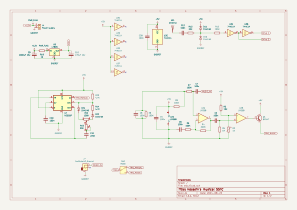

Musical Solid-State Tesla Coil (SSTC)
Introduction
This project was my first high-power solid state tesla coil and involved many failures and explosions along the way. It was a very time consuming and expensive yet fascinating journey to harness the forces of nature and make a reliable musical solid-state tesla coil; and in the end, I’m quite satisfied with the final result!I ended up using a PLL stage for reliable resonant drive of the coil which opened up the way to FM music, which produces surprisingly loud and clear music that continues to amaze even after prolonged exposure!
Features
- Adjustable PLL drive
- Super Clean Audio Modulation (Ready to use PCB with MH-M18 bluetooth module)
- Current transformer/Antenna feedback
- Overcurrent detection
- Under-voltage lockout
- Guaranteed soft-switching (usable for dual resonant setups, e.g. DRSSTCs)
- Powerful GDT driver stage
- 12-24 VDC input, easy to use for driving bridges of either MOSFETs or IGBTs
- External interrupt
- DC jack support
- AC input support
- Secure start for CW mode
- Extension ports for power/fan, audio, interrupt, status panel
How it works
The system operates as a control loop that uses current feedback from either the secondary or primary coil and locks to an adjustable phase difference.The feedback stage shapes the incoming signal by clipping it to appropriate voltage levels, which is then fed into an inverting Schmitt trigger to clean up the waveform. This cleaned signal is then given to the HEF4046 PLL chip. This chip is the heart of the circuit, generating the drive signal for the coil. VCO center frequency, phase difference and frequency range can be adjusted by 3 potentiometers. VCO input voltage is used to modulate the incoming audio signal from the bluetooth module (if enabled). This slightly shifts the drive frequency (causing the coil to operate slightly off-resonance). The resulting change in power draw causes the plasma output to vibrate the surrounding air at the modulated frequency (which is the audio), and plays an incredibly clear audio.
The drive signal is then fed into a signal-shaping stage, consisting of two flip-flops and several AND gates. The flip-flops handle soft-switching by ensuring that interrupts are only processed at clock edges, not during conduction periods. This allows extremely high efficient switching (It can be improved further if you adjust the correct phase difference in the PLL).
This stage produces two drive signals with a 180-degree phase difference, which is then fed into the TC4427 gate driver IC. This gate driver then drives the push-pull mosfet stage capable of driving gate drive transformers (GDTs) of various sizes thanks to its high current-handling capability. It can even drive small flyback transformers easily!
Gallery

- VBus: 300VDC
- Bus cap: 10mF
- CW mode at 2.5KW
- Rev: 3
- VBus: 300VDC
- Bus cap: 10mF
- CW mode at 2.5KW
- Rev: 3
- VBus: 300VDC
- Bus cap: 10mF
- CW mode at 2.5KW
- Rev: 3
- VBus: 300VDC
- Bus cap: 10mF
- CW mode at 2KW
- Rev: 3
- VBus: 300VDC
- Bus cap: 10mF
- CW mode at 2KW
- Rev: 3
- VBus: 300VDC
- Bus cap: 10mF
- CW mode at 2KW
- Rev: 3
- VBus: 220v @50Hz
- Half wave, No smoothing
- Power draw ~700W
- Rev: 3

- VBus: 110v
- Bus cap: 880uF
- CW mode with FM music modulation
- Rev: 2

- VBus: 220v @100Hz
- Full wave, No smoothing
- interrupted mode
- Rev: 2
- VBus: ~120 Vdc
- Bus cap: 10mF
- CW mode, with FM music
- Current draw: ~2.5 amps (PF ~0.82)
- Rev: 2
- VBus: 150Vac @100Hz
- Full wave, No smoothing
- CW mode
- Current draw: ~3.5 amps (PF ~1)
- Rev: 2
- VBus: 150Vac @100Hz
- Full wave, No smoothing
- CW mode
- Current draw: ~3.5 amps (PF ~1)
- Rev: 2

- VBus: 110v
- Bus cap: 880uF
- interrupted mode
- Rev: 2
- Death of the secondary coil :(
- Internal flashover that broke the pipe dielectric
- Rev: 2
- Final version
- Final version
- Testing outside
- Final PCB revision
- PCB for 3.1 driver (first PCB revision)
Videos
V3
This is the final design that’s been working a long time now, and has been built by others successfully.Schematics
{kind=link}
Older versions
The following is a list previous revisions, for the sake of completeness of the project history.V2
Schematics
Parts
V1
This was my first design that I didn’t continue as I realized that it has some inherent flaws and it’s better to start from scratch.Schematics
